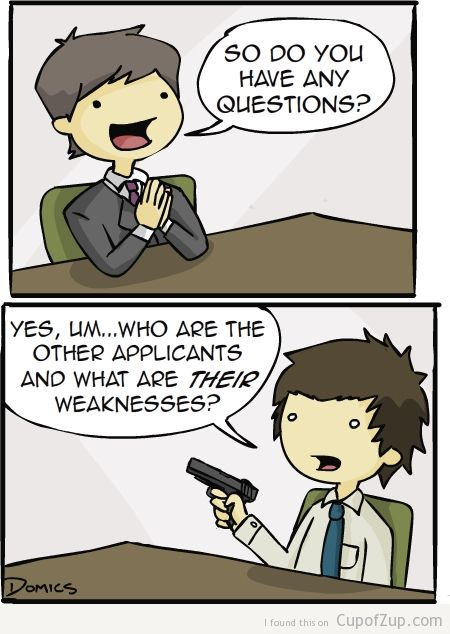

<style>
  nav {
    position: fixed;
    top: 0;
    left: 0;
    right: 0;
    height: 40px;
    background-color: #333;
    opacity: 0.99;
  }
  img#profile {
    border-radius: 15px;
    position: relative;
    top: 5px;
  }
  nav {
    padding-left: 5px;
    padding-right: 5px;
    z-index: 100;
  }
  nav a {
    background-color: transparent;
    line-height: 41px;
    height: 38px;
    color: #aaa;
    text-decoration: none;
    display: inline-block;
    font-size: 15px;
    font-family: 'Ubuntu', sans-serif;
  }
  nav a:visited {
    color: inherit;
  }
  nav a:hover {
    color: #eee;
  }
  .left-spacer {
    margin-left: 1em;
  }
  .right-spacer {
    margin-right: 1em;
  }
</style>
<script>
  // $("nav a").o

</script>
<nav class="">
  <a class="left right-spacer" href="#"></a>
  <a class="left right-spacer" href="file:///C:/Users/ylila/lab/blog/build/index.html">Home</a>
  <a class="left right-spacer" href="file:///C:/Users/ylila/lab/blog/build/articles/index.html">Articles</a>
  <a class="right left-spacer" href="file:///C:/Users/ylila/lab/blog/build/articles/">Hire Me</a>
  <a class="right left-spacer" href="file:///C:/Users/ylila/lab/blog/build/articles/">Disagree</a>
</nav> <head>
  <!-- <base href="file:///G:/lab/blog/build/"> -->
  <link rel="stylesheet" type="text/css" href="file:///C:/Users/ylila/lab/blog/build/lib/css/tmr.css">
  <link href="https://fonts.googleapis.com/css?family=Poiret+One|Ubuntu+Mono" rel="stylesheet">
  <script src="https://ajax.googleapis.com/ajax/libs/jquery/3.2.1/jquery.min.js"></script>
  <!-- <link rel="stylesheet" type="text/css" href="file:///C:/Users/ylila/lab/blog/build/lib/css/bootstrap.min.css"> -->
  <style>
    * {
      /* font-family: -apple-system, BlinkMacSystemFont, 'Segoe UI', Roboto, Oxygen, Ubuntu, Cantarell, 'Open Sans', 'Helvetica Neue', sans-serif; */
      margin: 0;
      padding: 0;
      /* font-family: 'Ubuntu', sans-serif; */
      /* font-family: 'Ubuntu Condensed', sans-serif; */
    }
    body {
      padding-top: 50px;
      background-color: #1d1f21;
    }
    .left {
      float: left;
    }
    .right {
      float: right;    
    }
    a:visited {
      color: #b294bb;
    }
    a {
      color: #81a2be;
      text-decoration: none;
    }
    a:hover {
      text-decoration: underline;
    }
  </style>
</head>

<style>
  article {
    padding: 3em;
    font-family: 'Ubuntu', sans-serif;
  }
  article > p {
    font-size: larger;
    margin-top: 1em; 
    margin-bottom: 1em; 
    line-height: 150%;
  }
  h1, h2, h3, h4, h5, h6 {
    color: #81a2be;
  }
  h1 {
    font-size: xx-large;
  }
  h2, h3, h4, h5, h6 {
    font-size: x-large;
  }
  article>div.read-est {
    font-size: small;
    margin-bottom: 0.25em;
    margin-left: 0.1em;
    font-weight: bold;
    opacity: 0.8;
    text-transform: uppercase;
  }
  p>code {
    background-color: rgba(0,0,0,0.1);  
    padding: 0.2em;  
    color: #f0dfaf;
  }
  div.sourceCode {
    background-color: rgba(0,0,0,0.1);      
    padding: 1em;    
  }
  code.sourceCode, pre.sourceCode  {
    background-color: transparent;
  }
  code {
    font-size: medium;
    font-family: 'Ubuntu Mono', monospace;
  }
  code>span {
    line-height: 125%;
  }
  /* article > p:last-of-type {
    margin-bottom: 0em; 
  } */
</style>

<article>
  <!DOCTYPE html PUBLIC "-//W3C//DTD XHTML 1.0 Transitional//EN" "http://www.w3.org/TR/xhtml1/DTD/xhtml1-transitional.dtd">
<html xmlns="http://www.w3.org/1999/xhtml">
<head>
  <meta http-equiv="Content-Type" content="text/html; charset=utf-8" />
  <meta http-equiv="Content-Style-Type" content="text/css" />
  <meta name="generator" content="pandoc" />
  <title></title>
  <style type="text/css">code{white-space: pre;}</style>
</head>
<body>
<div class="read-est">
272 words / 1 minutes read
</div>
<h1>
Interview Questions I Would Ask My Employer
</h1>
<p></p>
<p>Dear future employer, if we meet one day, here are some questions I would ask you at the end of my interview.</p>
<ul>
<li><p>How do you feel about me? - If the answer is negative, we can skip the rest questions and save both our time.</p></li>
<li><p>Will any of you (interviewers) be my supervisor or will it be someone else?</p></li>
<li><p>From my performance today, what do you think might be a potential problem if I'm working with you?</p></li>
<li><p>What do you think is the most important factor that makes a productive work environment?</p></li>
<li><p>How can a company make a productive enviroment also enjoyable?</p></li>
<li><p>How would you describe the work environment at your company?</p></li>
<li><p>I am currently working with a professor on a research that I would like to continue while I'm working. Will it be ok if I leave work for one hour twice a week to have a reasearch meeting with my professor, and make the hours back by coming to work early or leaving late?</p></li>
<li><p>My future plan is to continue working in the same company for the of my coop terms and post graduation. I plan to apply for permanent residency in your country, which would involve some paper work. Do you have any past experience with other employees with the same situation?</p></li>
<li><p>Currently my computer science program has a male / female student ratio of 1 / 3. Why in your opinion this is a phenomenon? (Is this an issue? Have your company done anything that helps address the issue?)</p></li>
</ul>
</body>
</html>
</article>
